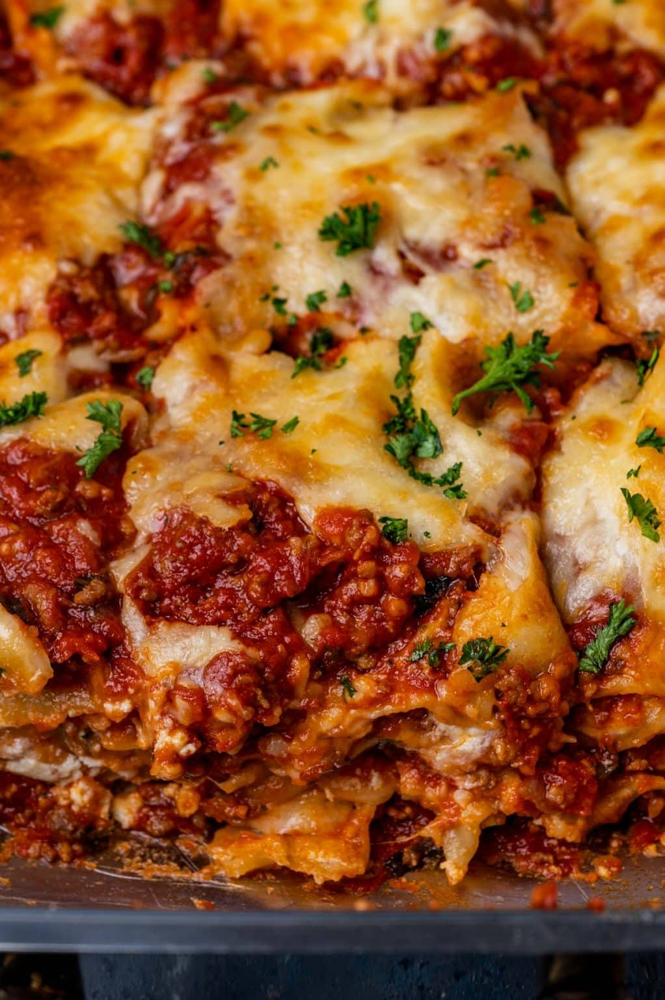

Lasagna

Ingredients
- Lasagna noodles
- Ground beef or Italian sausage
- Onion, diced
- Garlic, minced
- Green bell peppers, chopped
- Canned crushed tomatoes
- Tomato paste
- Dried basil
- Dried oregano
- Salt and pepper
- Ricotta cheese
- Eggs, beaten
- Grated Parmesan cheese
- Fresh parsley, chopped
- Shredded mozzarella cheese
Steps
- Preheat the oven to 375°F (190°C).
- Boil a large pot of water and cook the lasagna noodles according to the package instructions until al dente.
- While the noodles are cooking, prepare the meat sauce: In a skillet, brown ground beef or Italian sausage over medium-high heat. Drain excess fat, then add diced onions, minced garlic, and chopped bell peppers. Cook until vegetables are softened.
- Stir in canned crushed tomatoes, tomato paste, dried basil, oregano, salt, and pepper. Let the sauce simmer for about 15-20 minutes to allow the flavors to meld.
- In a separate bowl, mix ricotta cheese with beaten eggs, grated Parmesan cheese, and chopped fresh parsley.
- Assemble the lasagna: In a greased baking dish, start with a layer of meat sauce at the bottom.
- Place a layer of cooked lasagna noodles on top of the sauce.
- Add a layer of the ricotta cheese mixture and spread it evenly.
- Sprinkle shredded mozzarella cheese over the ricotta layer.
- Repeat the layers until you run out of ingredients, finishing with a layer of meat sauce and mozzarella cheese on top.
- Cover the baking dish with aluminum foil and bake in the preheated oven for about 25 minutes.
- Remove the foil and continue baking for an additional 15-20 minutes or until the cheese is bubbly and slightly browned.
- Let the lasagna rest for a few minutes before slicing and serving.
- Enjoy your delicious homemade lasagna!